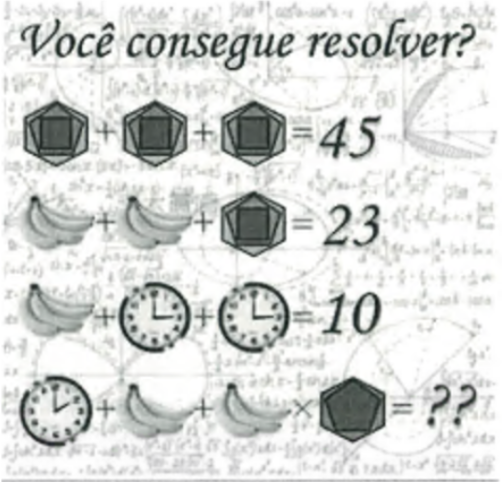

注意：考題請勿拍照外流，考試題目請用 Java 撰寫作答。
考題說明：考題已放置電腦桌面上。每一題要開新分頁去作答，頁籤要以題號命名，每一頁要有標題及製表人（放右下方）。
一、 邏輯測驗
- 計程車每輛限乘客 4 名，李家 15 人一同外出，應該租幾輛計程車？
- 一個大木箱內有 2 個中木箱，每個中木箱有 4 個小木箱，總共幾個木箱？
- 2 頭牛可換 3 隻豬，6 隻豬可換 8 隻羊，40 隻羊可換幾頭牛？
- 請計算出下圖問題

二、 業績表（檔名：考試-excel 業績表）
- 明細頁增加 1 欄總金額、總金額 = 數量 × 單價、總金額要有 "$"，3 位 1 撇、右靠。
- 將營報及店號分開、各自為一欄。
- 日期及門市篩選。
- 產出一張店的每日業績。
- 產出一張 Top sales 前 5 名。
- 產出一張每家店賣最好的商品。
- 樞紐分析呈現結果如桌面上 [樞紐分析結果]。
一、選擇題（每題 5 分）
1. 某門市當日 POS 交易資料如下：
現金銷售：40,000 / 信用卡銷售：60,000 / 電子支付：20,000 / 當日退貨：5,000
當日有一筆 前一日交易作廢：8,000（該筆交易原始交易日為昨日）
請問 今日營業額應為多少？
現金銷售：40,000 / 信用卡銷售：60,000 / 電子支付：20,000 / 當日退貨：5,000
當日有一筆 前一日交易作廢：8,000（該筆交易原始交易日為昨日）
請問 今日營業額應為多少？
2. 若 POS 系統與 ERP 系統帳務資料出現差異，下列何者最可能為原因？
3. 在資訊帳務系統中，下列哪一項資料最常用於進行對帳？
4. 若每日交易資料透過 Batch Job 匯入 ERP，若當日資料未入帳，首先應檢查：
二、簡答題（每題 10 分）
5. 請簡述 POS 系統交易資料傳入 ERP 或財務系統的一般流程。
（請列出主要步驟或系統流程）
6. 在資訊帳務系統中，每日對帳時通常需要比對哪些資料？
（請列出至少三項）
三、邏輯題（每題 15 分）
7. 情境題：某門市反映 POS 顯示今日銷售為 250,000，但 ERP 財務系統顯示為 230,000。
(1) 你會如何排查問題？
(2) 請列出至少三個可能原因：
四、資訊能力題（15 分）
8. 假設系統有一張交易資料表：
| transaction_id | store_id | amount | payment_type | date |
|---|
(1) 若要查詢「今日各支付方式的總交易金額」，應如何進行資料統計？
（可使用 SQL 或文字說明）
五、情境申論題（20 分）
9. 情境題
資訊帳務系統每日需進行：
• 門市交易資料匯入
• ERP帳務入帳
• 財務對帳
某日發現大量門市交易資料 未成功匯入 ERP 系統。
請說明：你會如何處理此事件？
未來應如何改善或避免再次發生？
六、管理與流程題（20 分）
10. 若你負責管理資訊帳務處理團隊，請說明你會如何：
(1) 建立帳務處理 SOP
(2) 降低帳務錯誤率
(3) 建立系統監控或預警機制